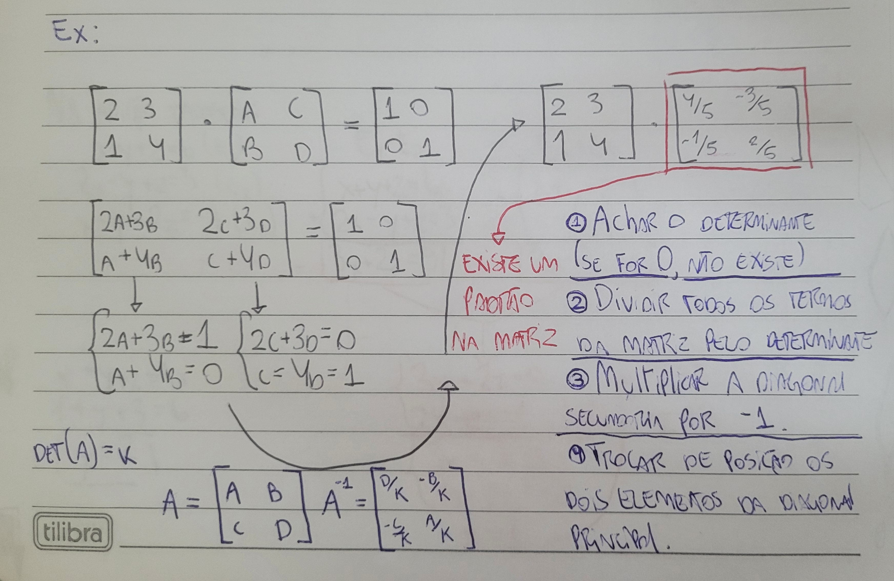

|
Na prática, para calcular a matriz inversa é necessário aplicar métodos específicos, como a regra da matriz adjunta e do determinante ou o método do escalonamento de Gauss-Jordan. O processo consiste em transformar a matriz original A em uma forma simplificada até que, ao lado dela, surja sua inversa A-1. Uma vez encontrada, essa matriz pode ser empregada para resolver sistemas lineares de forma direta, substituindo extensos cálculos de substituição ou adição por uma única operação de multiplicação matricial. Esse método é particularmente eficaz quando existem diversos sistemas distintos com a mesma matriz de coeficientes, pois a inversa pode ser reaproveitada. Na criptografia, a implementação prática consiste em selecionar uma matriz chave, normalmente quadrada e invertível, e multiplicá-la pelos vetores que simbolizam a mensagem original. Esse cálculo produz uma nova série de números que representa o texto codificado. Para decifrar a mensagem, emprega-se a matriz inversa da chave, multiplicando-a pelo vetor da mensagem codificada para recuperar o texto original. Esse método demonstra como a matemática pode ser utilizada de maneira prática para proteger e transmitir informações de forma segura. |
 |